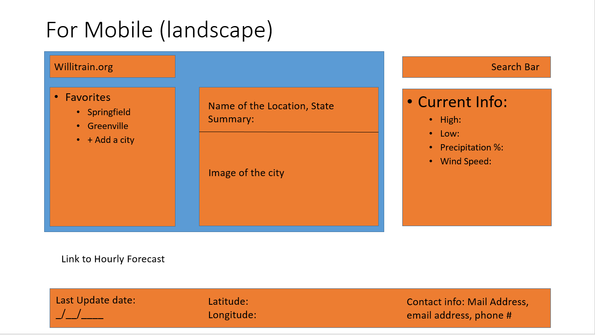
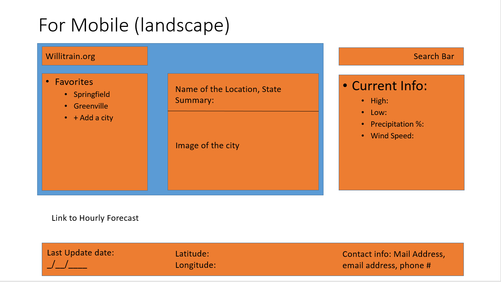

Franklin, ID
Summary:
Today's weather information:
Hourly Forecast:
Mr. Heavy is a 34 year old man with an avid love for hunting. He loves to go to the northern reaches of Ohio, as the best game can be found up there. However, he continues to worry about how much warmth he needs to bring to his hunting stand. With this website, Mr. Heavy can prepare for the most likely outcome when preparing for the hunt. He spends most of his time looking for deer and other game during hunting season (which can vary. For example, in Michigan dates range from April 1st to May 31st for different animals) while during every day that he doesn't hunt, he spends his time working as a lumberjack cutting trees with his favorite tool the chainsaw (he even has name for it: Sasha). Since he uses his phone in order to call around and as a GPS, Mr. Heavy uses data in order to not get lost and also uses apps that'll allow him to find areas where game have been found. Quote: Let's Git 'er Done!
Wireframe Drafts
Draft for small screens
 

Draft for a tablet screen

Draft for a Browser

Peer Review and Results
There was a lot of help in the feedback from everyone. Fekadu Haile was able to help me figure out that my website (since I had forgotten it) needed a section on Feedback. After pointing this out to me, I was able to add this section to the website. I also received help from Joseph Canto, who was kind enough to look over and re-validate my code to make sure it was correct in order to attempt to help me figure out why my page wasn't showing up. By double checking that all the associated files were labeled properly, I found out that my problem rested on the fact that my link was based on the idea of having to access it only from brackets editor via live preview. After reestablishing the proper link in the index, my pages were able to be accessed.